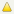

Field | Description |
 | Indicator of whether the node is running or not. Click the icon for a node to update individual status. Click to update status for all nodes. The status icons are: The node is running The node is stopped |
NODE NAME | The node name assigned to the node. If you click the node name, the browser connects directly to the node using the current window. You can change this name manually, as described in
Renaming a Node. |
ROLES | The cluster roles currently assigned to the node. |
UP TIME | The time since the node was last started in days, hours, and minutes. |
ACTIVE USERS | The number of active users for the node. This number may not equal the exact number of logged-in users because it can include guest sessions and abandoned sessions. |
ACTIONS | Actions you can take on the node, as described in
Restarting or Stopping Individual Nodes in a
Cluster. |